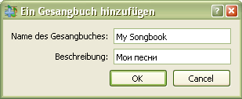

3.1.1 Gesangbuch hinzufügen
Beim Hinzufügen (speichern) neuer Lieder, erscheint ein Dialog-Fenster mit dem Vorschlag,
ein neues Gesangbuch hinzufügen. Tragen Sie bitte die Information über das neue Gesangbuch ein und
drücken Sie "Speichern", und tragen Sie in das Buch das Lied ein.
Ein Gesangbuch kann man auch aus der Datei (*.sps) importieren. Siehe
Ausführlicher: um mehr zu lernen.

Tragen Sie bitte den Namen des neuen Gesangbuches ein.
Tragen Sie bitte eine kurze Beschreibung des neuen Gesangbuches ein.
Das neue Gesangbuch wird in die Datenbank hinzugefügt.
Das Dialog-Fenster wird geschlossen und Sie können mit dem Hinzufügen (speichern) der Lieder in dieses Gesangbuch fortsetzen.